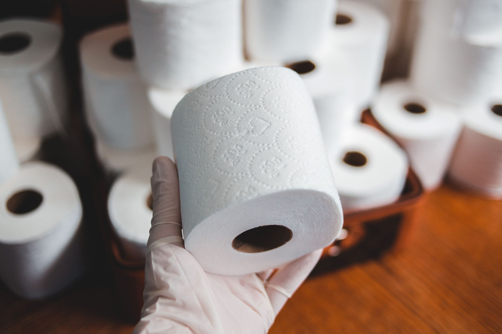

Toilet Paper | Deforestation
How to Use Less Toilet Paper
4 November 2020
The most effective options for saving toilet paper
Introduction
Statistica estimates that the average American uses 141 rolls of toilet paper each year... That's almost a tree a person (1 tree is 200 rolls). Just imagine the number of trees needed. If we talk global, 27.000 trees worth of toilet paper are produced daily.
I don't know how we can exactly combat that production issue. But here are some tips I came across, that help to alleviate the problem.
Now I know you may think I'm just 1 person out of many. But, think of it this way: you could save a tree every 5 years! How is that? At least you're doing something constructive to the world, just by being smart - and maybe you will inspire others.
- Use bamboo based toilet paper
- Use washable cloths
- Bring home tissues you get with fast food orders.
- Use toilet paper cloths
- If you're comfortable using it: a Bum Gun or an in-toilet bidet.
These options may work for the restroom visit or your kitchen clean-up - and...
They save you money too (140 rolls is > $100 annually)
To note, I am not affiliated to the products (I don't earn commissions), it's just for reference & environmentalism.